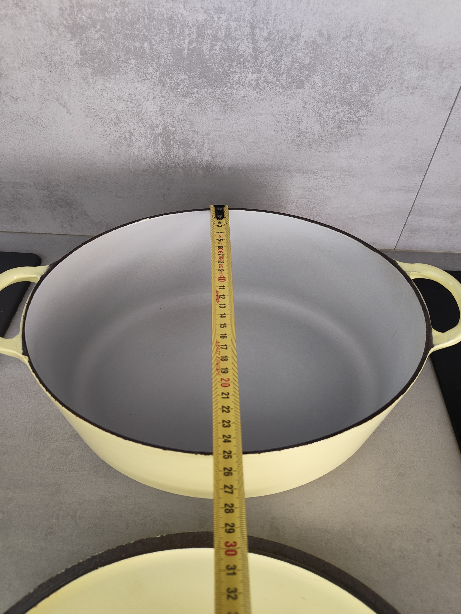
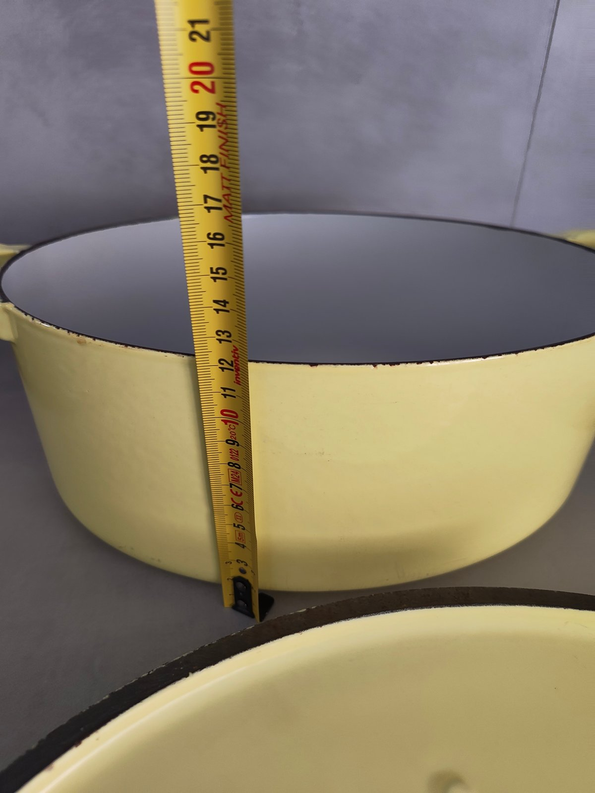
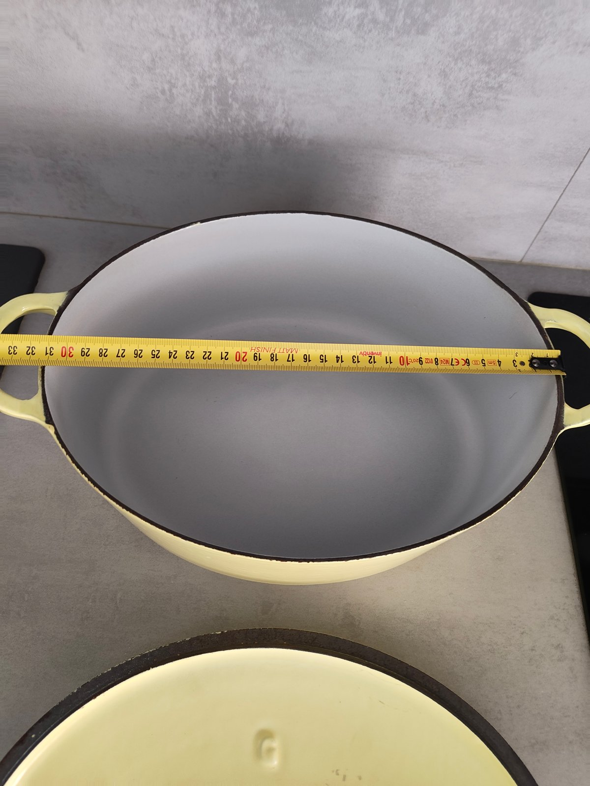
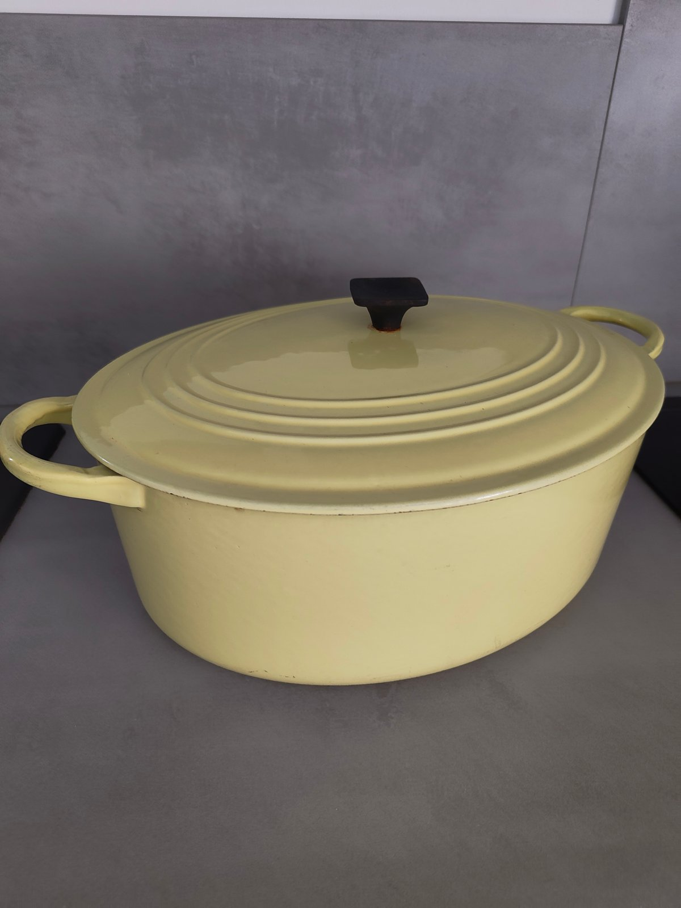
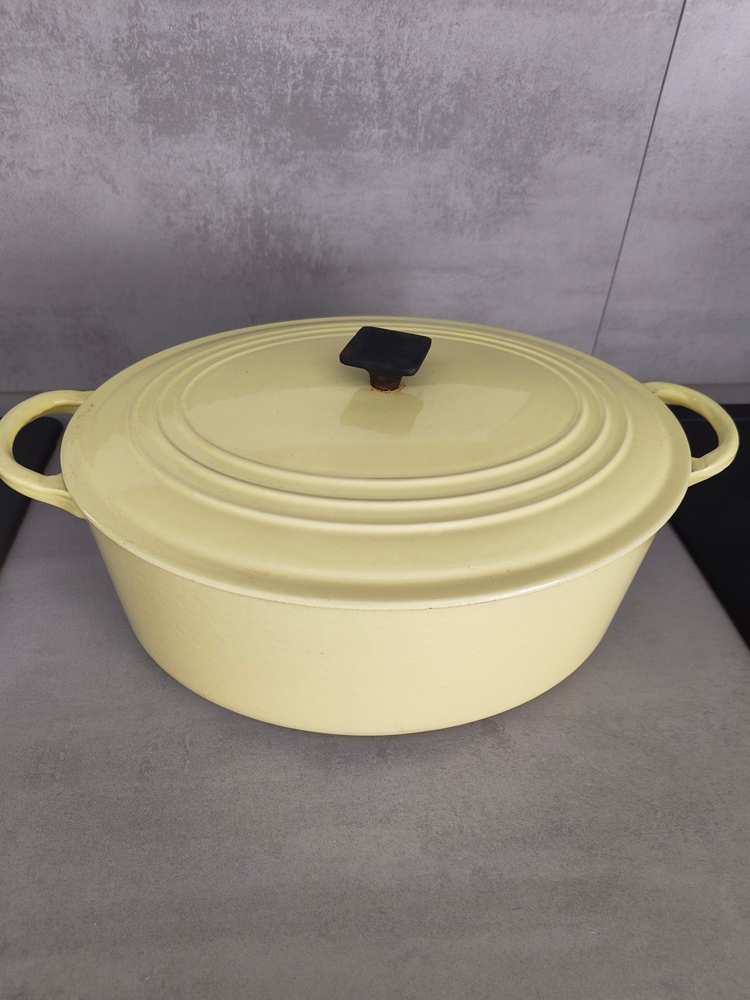
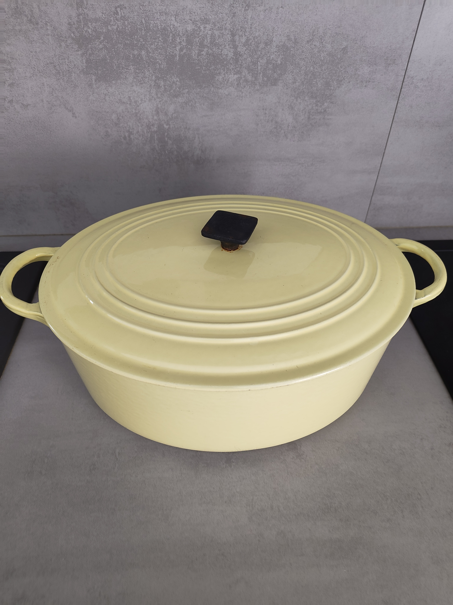
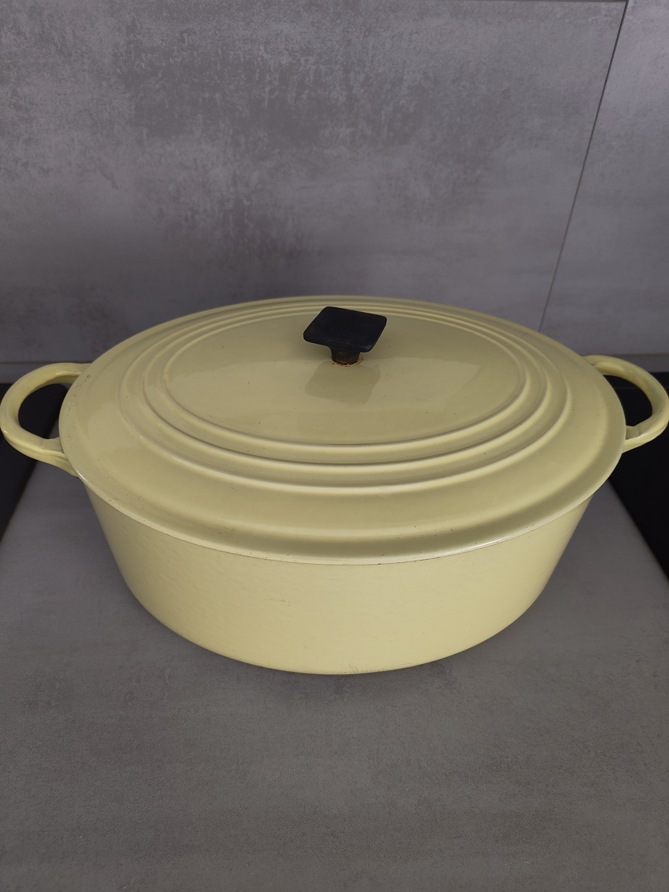
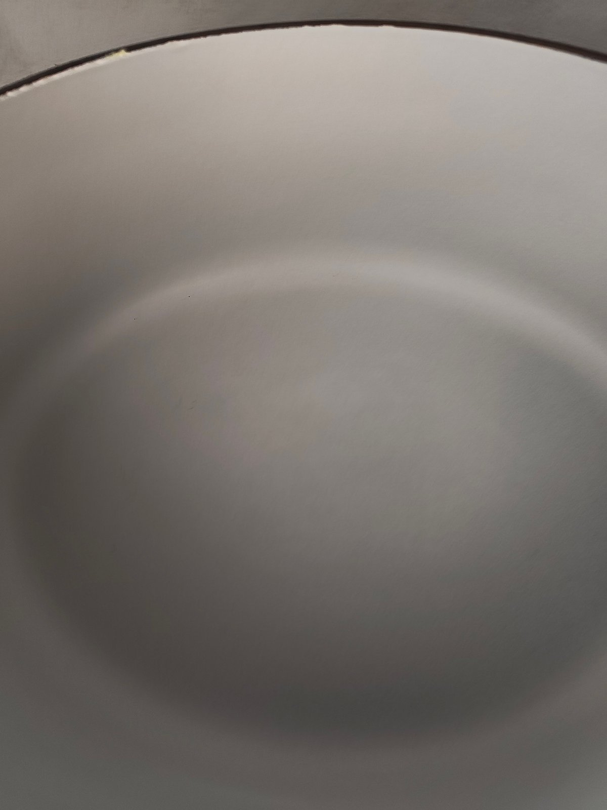
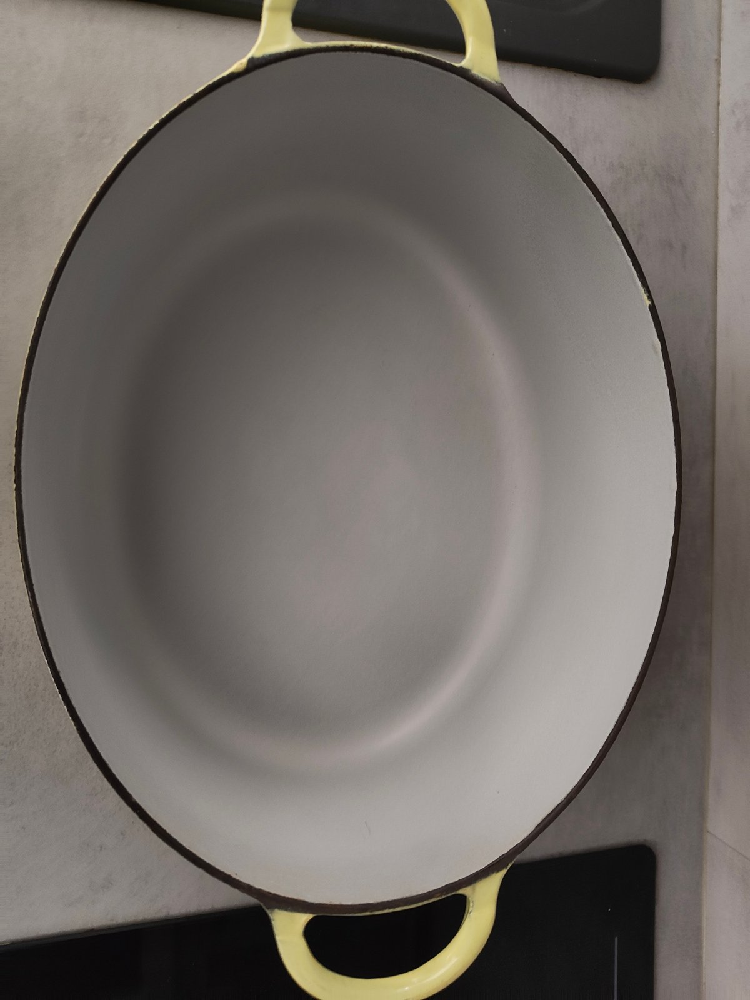
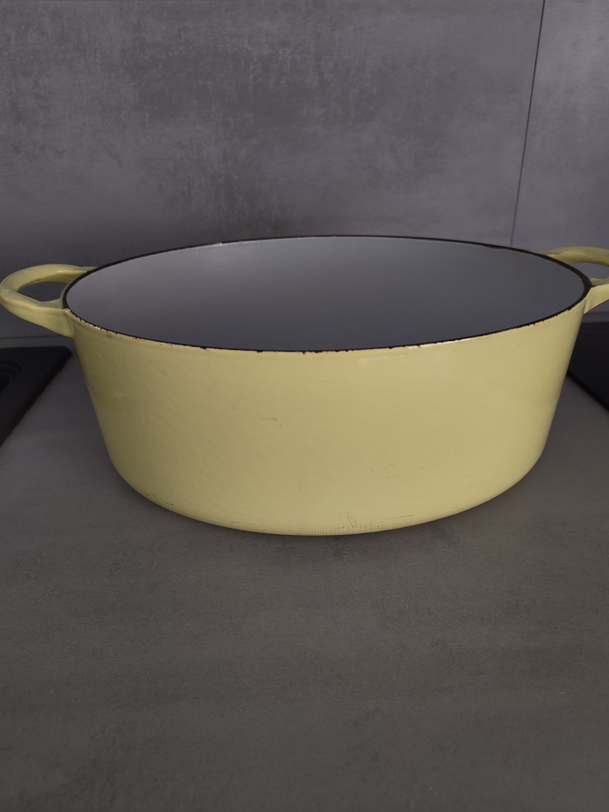
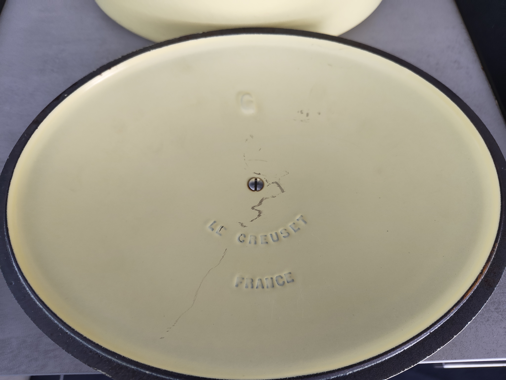
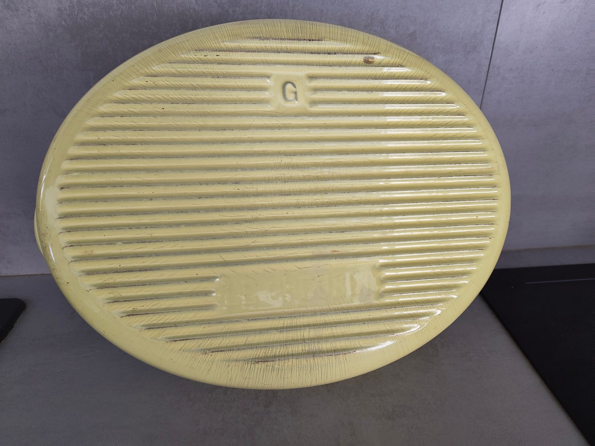
Vintage Cousances Cast Iron Dutch Oven Size G – Yellow – Made in France – Rare Large Casserole
150€
Large vintage Cousances enameled cast iron Dutch oven, marked Size G, made in France. This is a rare and larger Cousances size, making it highly desirable for collectors and serious home cooks. Cousances was a historic French cookware manufacturer later acquired by Le Creuset, and these earlier pieces are known for their exceptional quality, durability, and classic French design. The heavy enameled cast iron construction provides outstanding heat retention and even cooking, perfect for large stews, braising, roasts, soups, and slow-cooked dishes. The elegant pale yellow enamel and classic lid design give it a beautiful vintage kitchen look. Details: • Brand: Cousances • Type: Cast iron Dutch oven / casserole • Size: G (large / rare size) • Material: Enameled cast iron • Color: Yellow • Made in France • Original lid with black knob • Two side handles Condition: Good vintage condition with normal signs of use consistent with age. Enamel remains solid and functional. Please review photos for full condition details. A beautiful and collectible piece of vintage French cookware, perfect for everyday use or for collectors of Cousances / early Le Creuset era cast iron.